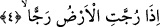
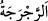
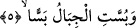
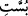
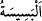
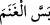
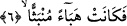
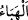
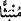

Fakat öyle rind-i harâbat da vardır ki erkek aslana eyer vurur.
4. Yer şiddetle sarsıldığı,
Âyette geçen __WORD__ (recc) kelimesi, bir şeyi sallamak, sarsmak, __WORD__ (racraceh)
kelimesi ise sarsılmak, deprenmek demektir. Bu durumda âyet-i kerîmenin mânâsı şöyle
olur: Yeryüzü, üzerindeki binâlar ve dağlar yıkılıp yerle bir olacak şekilde, şiddetle
sarsıldığı ve içindeki şeyleri dışına atmadıkça sarsıntısı durmayacağı o zamanda
kıyâmet bazı kimseleri alçaltır, bazılarını da yükseltir.
5. Dağlar parçalandığı,
Yâni, dağlar paramparça olup kavut gibi karmakarışık olduğu zaman. Âyetteki mechûl
fiil olan __WORD__ (büsset), arapçada “kavut karıştırdı” anlamında kullanılan “besse” den
alınmıştır. Un su ile karıştırılıp tavada helva gibi pişirilen ve pişirilip azık edinilen
kavut anlamındaki __WORD__ (besîse) de yine aynı kelimeden türetilmiştir.
Âyet-i kerîmenin anlamı şöyle de olabilir: “Dağlar sürülüp yerlerinden yürütüldüğü
zaman,” Araplar davarı sürdü cümlesini __WORD__ “besse’l-ğaneme” ile anlatırlar böylece
“büsse” fiilinin parçalanmak, dağılmak mânâlarından başka, yürütmek ve sürmek
anlamına alındığında bu mânâ çıkar.
6. Dağılıp toz duman hâline geldiği,
Âyette geçen__WORD__ (hebâ) kelimesi toz demektir. Atların ayaklarını yere vurmakla
tırnaklarının fırlattığı ince toza, uçuştuğu görülen zerrelere “hebâ” denilir. Ya da “hebâ”
ateşin alevinden uçuşan kıvılcımlar veya rüzgarın serpiştirdiği yapraklar anlamındadır.__WORD__ (münbess), yayılmış, paramparça olmuş demektir.
Tefsir’de şunlar kaydedilmiştir: Şübhesiz Allah Teâlâ cennetin altından bir rüzgar
estirip bu rüzgar yeri ve dağları yüklenerek birbirine çarpar, onlar toz duman oluncaya
kadar bu vurup çarpma devam eder. Tozlar inkârcıların yüzlerine dökülür. Nitekim,
“Yine o gün bir takım yüzleri bir toz toprak sarmıştır” (Abese 80/40) buyrulmuştur.